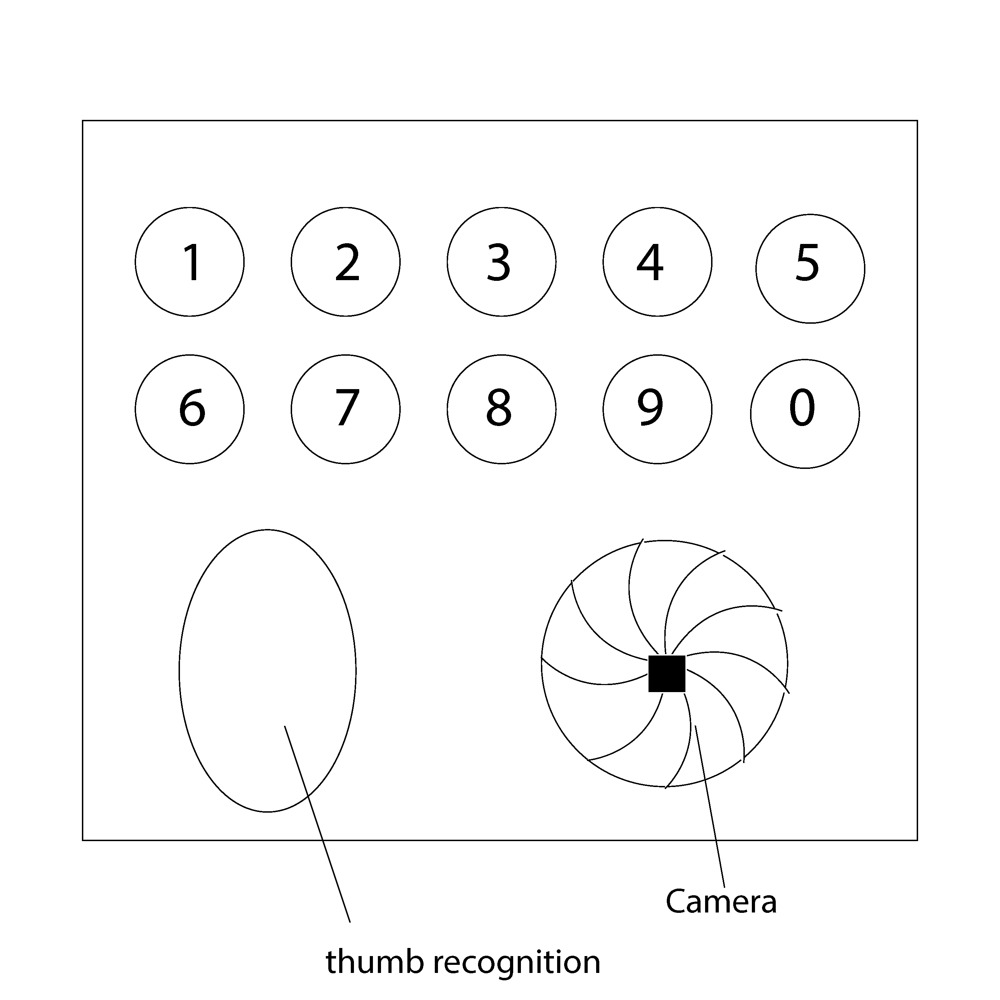
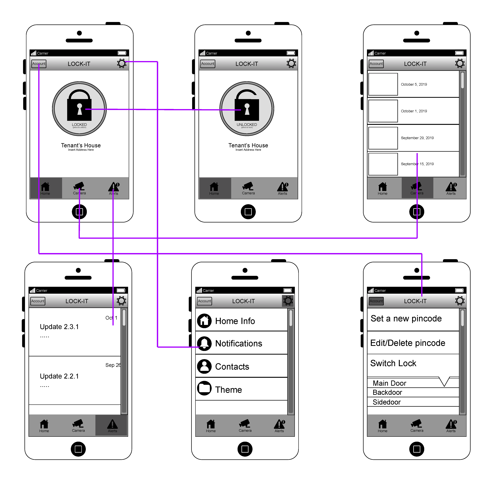

Smart Home Technology Project
by Conner Beck
Heuristic Review
Through the past few weeks we were given a smart home technology and given the task to improve upon what was already there. I started by putting the product through a heuristic review, noting what I liked and what I particularly didn’t like. The product I was given was an app that would unlock/lock a door with the touch of a button. I approved of the simplistic design as well as how easy it was to get used to, though it was very rigid in practice. Here’s my heuristic review:
- Match Mental Model: I felt that on a base level, the app preformed pretty much as I'd expect, though some functionality was missing.
- Minimize Perceived Complexity: It wasn't very obvious that the camera was also a doorbell.
- Use consistent form, words, and actions: This I felt the app did quite well.
- Provide a sense of place: The app definitely has a sense of place.
- Account for user and environmental constraints: The device requires a internet connection, so if for some reason you don't have your phone or your connection is interuppted I would suggest some sort of offline pin pad.
- Anticipate needs: It isn't always obvious whether the button needs to be pressed again to unlock/lock the door. It would also be nice to be able to select multiple notification options in the notification menu.
- Use clear and concise language: The app does this well.
- Give feedback about actions and status: Putting notifications on the main page would be nice, also giving a visual indicator that the door is locked/unlocked instead of just a sound.
- Prevent errors and provide graceful recover: I didn't notice anything too wrong here.
- Appropriate and minimal aesthetics: Once again, the doorbell is not obvious.
Wireframes
After my review I made some brief wireframes with the intention of getting my first designs on paper. Here is what I ended up with:



I do regret not going further with these, but with my basic ideas on paper and with some ideas I bounced off my classmates I felt ready for the next stage.
Mid/High Fidelity Prototype
My wireframes were very basic but with them I was able to move on to the next stage, making a mid/high fidelity prototype. I realized that with my prototype it wasn’t very easy to show all the hardware issues I had with the product, so I focused on organizing the camera data in the app. This led to a complete redesign of the app itself which wasn’t planned but as I thought of more features to add, it became necessary. After all was said and done, this is what I came up with:

Usability Test
Though not perfect, I felt it was a massive step in the right direction. The next step was to create a usability test to weed out any issues my first prototype might have. I came up with a fairly simple set of instructions in different scenarios that I thought captured what a user would experience in real life. Here’s my usability test:


The results of my test were pretty much what I expected. What I didn’t expect was that my usability test was too simplistic and too narrow. I had only tested for initial set up and not for any of the more complicated features I added in my prototype.
I got questions about some of the tabs and features that I completely neglected. For example, I was asked a couple of times by my test participants after the test was over why I had decided to add the ability to switch doors in the account tab rather than on the home screen. I didn’t really have a good answer for this, but as I was taking a closer look at my prototype I realized that there were other things I had added that didn’t make a ton of sense from a usability perspective.
The settings button and the account button really didn’t need to be two seperate buttons, for example. Also, why did I even add a contacts setting? I quickly realized that perhaps just adding features on the fly as I was creating my prototype wasn’t such a good idea after all. This made me really appreciate what wireframing is for. Had I taken a bit longer on my wireframes and planned out how exactly I wanted my features to work, I wouldn’t have wasted so much work on a sub optimal prototype.
The next step that I would suggest is to go back to the wireframes and really plan out what I want to accomplish with the app as a whole rather than what few features I want to add. Specifically where I want the features to go rather than what features I want.
If I were to go back and start over I would make sure to spend longer on the wireframing stage, as well as to write a better, and broader usability test. The only reason I felt that my usability test was helpful as a whole was that the participants asked me good questions about my design choices. Had they not, I might still be in the dark about some of the issues with my design